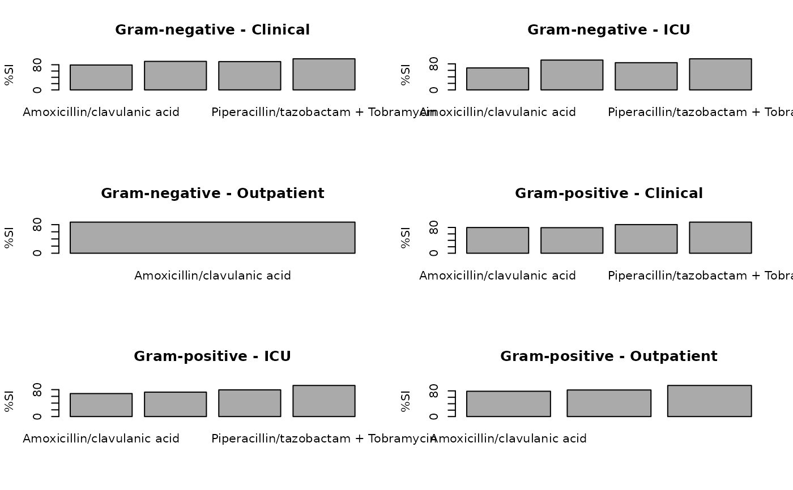
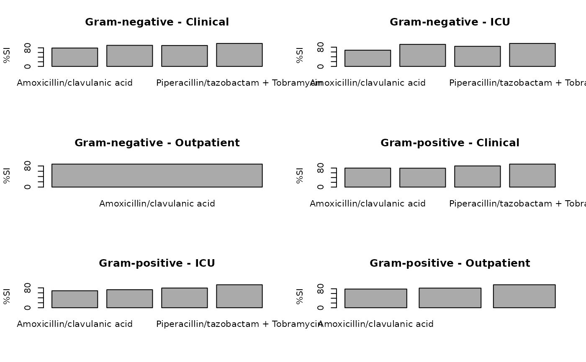

Generate Antibiogram: Traditional, Combined, Syndromic, or Weighted-Incidence Syndromic Combination (WISCA)
Source:R/antibiogram.R
antibiogram.RdGenerate an antibiogram, and communicate the results in plots or tables. These functions follow the logic of Klinker et al. and Barbieri et al. (see Source), and allow reporting in e.g. R Markdown and Quarto as well.
Usage
antibiogram(
x,
antibiotics = where(is.sir),
mo_transform = "shortname",
ab_transform = NULL,
syndromic_group = NULL,
add_total_n = TRUE,
only_all_tested = FALSE,
digits = 0,
col_mo = NULL,
language = get_AMR_locale(),
minimum = 30,
combine_SI = TRUE,
sep = " + ",
info = interactive()
)
# S3 method for antibiogram
plot(x, ...)
# S3 method for antibiogram
autoplot(object, ...)
# S3 method for antibiogram
knit_print(
x,
italicise = TRUE,
na = getOption("knitr.kable.NA", default = ""),
...
)Source
Klinker KP et al. (2021). Antimicrobial stewardship and antibiograms: importance of moving beyond traditional antibiograms. Therapeutic Advances in Infectious Disease, May 5;8:20499361211011373; doi:10.1177/20499361211011373
Barbieri E et al. (2021). Development of a Weighted-Incidence Syndromic Combination Antibiogram (WISCA) to guide the choice of the empiric antibiotic treatment for urinary tract infection in paediatric patients: a Bayesian approach Antimicrobial Resistance & Infection Control May 1;10(1):74; doi:10.1186/s13756-021-00939-2
M39 Analysis and Presentation of Cumulative Antimicrobial Susceptibility Test Data, 5th Edition, 2022, Clinical and Laboratory Standards Institute (CLSI). https://clsi.org/standards/products/microbiology/documents/m39/.
Arguments
- x
a data.frame containing at least a column with microorganisms and columns with antibiotic results (class 'sir', see
as.sir())- antibiotics
vector of any antibiotic name or code (will be evaluated with
as.ab(), column name ofx, or (any combinations of) antibiotic selectors such asaminoglycosides()orcarbapenems(). For combination antibiograms, this can also be set to values separated with"+", such as "TZP+TOB" or "cipro + genta", given that columns resembling such antibiotics exist inx. See Examples.- mo_transform
a character to transform microorganism input - must be "name", "shortname", "gramstain", or one of the column names of the microorganisms data set: "mo", "fullname", "status", "kingdom", "phylum", "class", "order", "family", "genus", "species", "subspecies", "rank", "ref", "source", "lpsn", "lpsn_parent", "lpsn_renamed_to", "gbif", "gbif_parent", "gbif_renamed_to", "prevalence", or "snomed". Can also be
NULLto not transform the input.- ab_transform
a character to transform antibiotic input - must be one of the column names of the antibiotics data set: "ab", "cid", "name", "group", "atc", "atc_group1", "atc_group2", "abbreviations", "synonyms", "oral_ddd", "oral_units", "iv_ddd", "iv_units", or "loinc". Can also be
NULLto not transform the input.- syndromic_group
a column name of
x, or values calculated to split rows ofx, e.g. by usingifelse()orcase_when(). See Examples.- add_total_n
a logical to indicate whether total available numbers per pathogen should be added to the table (default is
TRUE). This will add the lowest and highest number of available isolate per antibiotic (e.g, if for E. coli 200 isolates are available for ciprofloxacin and 150 for amoxicillin, the returned number will be "150-200").- only_all_tested
(for combination antibiograms): a logical to indicate that isolates must be tested for all antibiotics, see Details
- digits
number of digits to use for rounding
- col_mo
column name of the names or codes of the microorganisms (see
as.mo()) - the default is the first column of classmo. Values will be coerced usingas.mo().- language
language to translate text, which defaults to the system language (see
get_AMR_locale())- minimum
the minimum allowed number of available (tested) isolates. Any isolate count lower than
minimumwill returnNAwith a warning. The default number of30isolates is advised by the Clinical and Laboratory Standards Institute (CLSI) as best practice, see Source.- combine_SI
a logical to indicate whether all susceptibility should be determined by results of either S or I, instead of only S (default is
TRUE)- sep
a separating character for antibiotic columns in combination antibiograms
- info
a logical to indicate info should be printed - the default is
TRUEonly in interactive mode- ...
when used in R Markdown or Quarto: arguments passed on to
knitr::kable()(otherwise, has no use)- object
an
antibiogram()object- italicise
a logical to indicate whether the microorganism names in the knitr table should be made italic, using
italicise_taxonomy().- na
character to use for showing
NAvalues
Details
This function returns a table with values between 0 and 100 for susceptibility, not resistance.
Remember that you should filter your data to let it contain only first isolates! This is needed to exclude duplicates and to reduce selection bias. Use first_isolate() to determine them in your data set with one of the four available algorithms.
All types of antibiograms as listed below can be plotted (using ggplot2::autoplot() or base R plot()/barplot()). The antibiogram object can also be used directly in R Markdown / Quarto (i.e., knitr) for reports. In this case, knitr::kable() will be applied automatically and microorganism names will even be printed in italics at default (see argument italicise). You can also use functions from specific 'table reporting' packages to transform the output of antibiogram() to your needs, e.g. with flextable::as_flextable() or gt::gt().
Antibiogram Types
There are four antibiogram types, as proposed by Klinker et al. (2021, doi:10.1177/20499361211011373
), and they are all supported by antibiogram():
Traditional Antibiogram
Case example: Susceptibility of Pseudomonas aeruginosa to piperacillin/tazobactam (TZP)
Code example:
antibiogram(your_data, antibiotics = "TZP")Combination Antibiogram
Case example: Additional susceptibility of Pseudomonas aeruginosa to TZP + tobramycin versus TZP alone
Code example:
antibiogram(your_data, antibiotics = c("TZP", "TZP+TOB", "TZP+GEN"))Syndromic Antibiogram
Case example: Susceptibility of Pseudomonas aeruginosa to TZP among respiratory specimens (obtained among ICU patients only)
Code example:
antibiogram(your_data, antibiotics = penicillins(), syndromic_group = "ward")Weighted-Incidence Syndromic Combination Antibiogram (WISCA)
Case example: Susceptibility of Pseudomonas aeruginosa to TZP among respiratory specimens (obtained among ICU patients only) for male patients age >=65 years with heart failure
Code example:
Note that for combination antibiograms, it is important to realise that susceptibility can be calculated in two ways, which can be set with the only_all_tested argument (default is FALSE). See this example for two antibiotics, Drug A and Drug B, about how antibiogram() works to calculate the %SI:
--------------------------------------------------------------------
only_all_tested = FALSE only_all_tested = TRUE
----------------------- -----------------------
Drug A Drug B include as include as include as include as
numerator denominator numerator denominator
-------- -------- ---------- ----------- ---------- -----------
S or I S or I X X X X
R S or I X X X X
<NA> S or I X X - -
S or I R X X X X
R R - X - X
<NA> R - - - -
S or I <NA> X X - -
R <NA> - - - -
<NA> <NA> - - - -
--------------------------------------------------------------------Examples
# example_isolates is a data set available in the AMR package.
# run ?example_isolates for more info.
example_isolates
#> # A tibble: 2,000 × 46
#> date patient age gender ward mo PEN OXA FLC AMX
#> <date> <chr> <dbl> <chr> <chr> <mo> <sir> <sir> <sir> <sir>
#> 1 2002-01-02 A77334 65 F Clinical B_ESCHR_COLI R NA NA NA
#> 2 2002-01-03 A77334 65 F Clinical B_ESCHR_COLI R NA NA NA
#> 3 2002-01-07 067927 45 F ICU B_STPHY_EPDR R NA R NA
#> 4 2002-01-07 067927 45 F ICU B_STPHY_EPDR R NA R NA
#> 5 2002-01-13 067927 45 F ICU B_STPHY_EPDR R NA R NA
#> 6 2002-01-13 067927 45 F ICU B_STPHY_EPDR R NA R NA
#> 7 2002-01-14 462729 78 M Clinical B_STPHY_AURS R NA S R
#> 8 2002-01-14 462729 78 M Clinical B_STPHY_AURS R NA S R
#> 9 2002-01-16 067927 45 F ICU B_STPHY_EPDR R NA R NA
#> 10 2002-01-17 858515 79 F ICU B_STPHY_EPDR R NA S NA
#> # … with 1,990 more rows, and 36 more variables: AMC <sir>, AMP <sir>,
#> # TZP <sir>, CZO <sir>, FEP <sir>, CXM <sir>, FOX <sir>, CTX <sir>,
#> # CAZ <sir>, CRO <sir>, GEN <sir>, TOB <sir>, AMK <sir>, KAN <sir>,
#> # TMP <sir>, SXT <sir>, NIT <sir>, FOS <sir>, LNZ <sir>, CIP <sir>,
#> # MFX <sir>, VAN <sir>, TEC <sir>, TCY <sir>, TGC <sir>, DOX <sir>,
#> # ERY <sir>, CLI <sir>, AZM <sir>, IPM <sir>, MEM <sir>, MTR <sir>,
#> # CHL <sir>, COL <sir>, MUP <sir>, RIF <sir>
# \donttest{
# Traditional antibiogram ----------------------------------------------
antibiogram(example_isolates,
antibiotics = c(aminoglycosides(), carbapenems())
)
#> ℹ For aminoglycosides() using columns 'GEN' (gentamicin), 'TOB'
#> (tobramycin), 'AMK' (amikacin), and 'KAN' (kanamycin)
#> ℹ For carbapenems() using columns 'IPM' (imipenem) and 'MEM' (meropenem)
#> # A tibble: 10 × 7
#> `Pathogen (N min-max)` AMK GEN IPM KAN MEM TOB
#> * <chr> <dbl> <dbl> <dbl> <dbl> <dbl> <dbl>
#> 1 CoNS (43-309) 0 86 52 0 52 22
#> 2 E. coli (0-462) 100 98 100 NA 100 97
#> 3 E. faecalis (0-39) 0 0 100 0 NA 0
#> 4 K. pneumoniae (0-58) NA 90 100 NA 100 90
#> 5 P. aeruginosa (17-30) NA 100 NA 0 NA 100
#> 6 P. mirabilis (0-34) NA 94 94 NA NA 94
#> 7 S. aureus (2-233) NA 99 NA NA NA 98
#> 8 S. epidermidis (8-163) 0 79 NA 0 NA 51
#> 9 S. hominis (3-80) NA 92 NA NA NA 85
#> 10 S. pneumoniae (11-117) 0 0 NA 0 NA 0
antibiogram(example_isolates,
antibiotics = aminoglycosides(),
ab_transform = "atc",
mo_transform = "gramstain"
)
#> ℹ For aminoglycosides() using columns 'GEN' (gentamicin), 'TOB'
#> (tobramycin), 'AMK' (amikacin), and 'KAN' (kanamycin)
#> # A tibble: 2 × 5
#> `Pathogen (N min-max)` J01GB01 J01GB03 J01GB04 J01GB06
#> * <chr> <dbl> <dbl> <dbl> <dbl>
#> 1 Gram-negative (35-686) 96 96 0 98
#> 2 Gram-positive (436-1170) 34 63 0 0
antibiogram(example_isolates,
antibiotics = carbapenems(),
ab_transform = "name",
mo_transform = "name"
)
#> ℹ For carbapenems() using columns 'IPM' (imipenem) and 'MEM' (meropenem)
#> # A tibble: 5 × 3
#> `Pathogen (N min-max)` Imipenem Meropenem
#> * <chr> <dbl> <dbl>
#> 1 Coagulase-negative Staphylococcus (CoNS) (48-48) 52 52
#> 2 Enterococcus faecalis (0-38) 100 NA
#> 3 Escherichia coli (418-422) 100 100
#> 4 Klebsiella pneumoniae (51-53) 100 100
#> 5 Proteus mirabilis (27-32) 94 NA
# Combined antibiogram -------------------------------------------------
# combined antibiotics yield higher empiric coverage
antibiogram(example_isolates,
antibiotics = c("TZP", "TZP+TOB", "TZP+GEN"),
mo_transform = "gramstain"
)
#> # A tibble: 2 × 4
#> `Pathogen (N min-max)` TZP `TZP + GEN` `TZP + TOB`
#> * <chr> <dbl> <dbl> <dbl>
#> 1 Gram-negative (641-693) 88 99 98
#> 2 Gram-positive (345-1044) 86 98 95
# names of antibiotics do not need to resemble columns exactly:
antibiogram(example_isolates,
antibiotics = c("Cipro", "cipro + genta"),
mo_transform = "gramstain",
ab_transform = "name",
sep = " & "
)
#> # A tibble: 2 × 3
#> `Pathogen (N min-max)` Ciprofloxacin `Ciprofloxacin & Gentamicin`
#> * <chr> <dbl> <dbl>
#> 1 Gram-negative (684-694) 91 99
#> 2 Gram-positive (724-847) 77 93
# Syndromic antibiogram ------------------------------------------------
# the data set could contain a filter for e.g. respiratory specimens
antibiogram(example_isolates,
antibiotics = c(aminoglycosides(), carbapenems()),
syndromic_group = "ward"
)
#> ℹ For aminoglycosides() using columns 'GEN' (gentamicin), 'TOB'
#> (tobramycin), 'AMK' (amikacin), and 'KAN' (kanamycin)
#> ℹ For carbapenems() using columns 'IPM' (imipenem) and 'MEM' (meropenem)
#> # A tibble: 14 × 8
#> `Syndromic Group` `Pathogen (N min-max)` AMK GEN IPM KAN MEM TOB
#> * <chr> <chr> <dbl> <dbl> <dbl> <dbl> <dbl> <dbl>
#> 1 Clinical CoNS (23-205) NA 89 57 NA 57 26
#> 2 ICU CoNS (10-73) NA 79 NA NA NA NA
#> 3 Outpatient CoNS (3-31) NA 84 NA NA NA NA
#> 4 Clinical E. coli (0-299) 100 98 100 NA 100 98
#> 5 ICU E. coli (0-137) 100 99 100 NA 100 96
#> 6 Clinical K. pneumoniae (0-51) NA 92 100 NA 100 92
#> 7 Clinical P. mirabilis (0-30) NA 100 NA NA NA 100
#> 8 Clinical S. aureus (2-150) NA 99 NA NA NA 97
#> 9 ICU S. aureus (0-66) NA 100 NA NA NA NA
#> 10 Clinical S. epidermidis (4-79) NA 82 NA NA NA 55
#> 11 ICU S. epidermidis (4-75) NA 72 NA NA NA 41
#> 12 Clinical S. hominis (1-45) NA 96 NA NA NA 94
#> 13 Clinical S. pneumoniae (5-78) 0 0 NA 0 NA 0
#> 14 ICU S. pneumoniae (5-30) 0 0 NA 0 NA 0
# now define a data set with only E. coli
ex1 <- example_isolates[which(mo_genus() == "Escherichia"), ]
#> ℹ Using column 'mo' as input for mo_genus()
# with a custom language, though this will be determined automatically
# (i.e., this table will be in Spanish on Spanish systems)
antibiogram(ex1,
antibiotics = aminoglycosides(),
ab_transform = "name",
syndromic_group = ifelse(ex1$ward == "ICU",
"UCI", "No UCI"
),
language = "es"
)
#> ℹ For aminoglycosides() using columns 'GEN' (gentamicin), 'TOB'
#> (tobramycin), 'AMK' (amikacin), and 'KAN' (kanamycin)
#> # A tibble: 2 × 5
#> `Grupo sindrómico` `Patógeno (N min-max)` Amikacina Gentamicina Tobramicina
#> * <chr> <chr> <dbl> <dbl> <dbl>
#> 1 No UCI E. coli (0-325) 100 98 98
#> 2 UCI E. coli (0-137) 100 99 96
# Weighted-incidence syndromic combination antibiogram (WISCA) ---------
# the data set could contain a filter for e.g. respiratory specimens/ICU
antibiogram(example_isolates,
antibiotics = c("AMC", "AMC+CIP", "TZP", "TZP+TOB"),
mo_transform = "gramstain",
minimum = 10, # this should be >=30, but now just as example
syndromic_group = ifelse(example_isolates$age >= 65 &
example_isolates$gender == "M",
"WISCA Group 1", "WISCA Group 2"
)
)
#> # A tibble: 4 × 6
#> `Syndromic Group` `Pathogen (N min-max)` AMC `AMC + CIP` TZP `TZP + TOB`
#> * <chr> <chr> <dbl> <dbl> <dbl> <dbl>
#> 1 WISCA Group 1 Gram-negative (261-285) 76 95 89 99
#> 2 WISCA Group 2 Gram-negative (380-442) 76 98 88 98
#> 3 WISCA Group 1 Gram-positive (123-406) 76 89 81 95
#> 4 WISCA Group 2 Gram-positive (222-732) 76 89 88 95
# Print the output for R Markdown / Quarto -----------------------------
ureido <- antibiogram(example_isolates,
antibiotics = ureidopenicillins(),
ab_transform = "name"
)
#> ℹ For ureidopenicillins() using column 'TZP' (piperacillin/tazobactam)
# in an Rmd file, you would just need to return `ureido` in a chunk,
# but to be explicit here:
if (requireNamespace("knitr")) {
knitr::knit_print(ureido)
}
#> [1] "\n\n|Pathogen (N) | Piperacillin/tazobactam|\n|:---------------------|-----------------------:|\n|CoNS (33) | 30|\n|*E. coli* (416) | 94|\n|*K. pneumoniae* (53) | 89|\n|*S. pneumoniae* (112) | 100|"
#> attr(,"class")
#> [1] "knit_asis"
#> attr(,"knit_cacheable")
#> [1] NA
# Generate plots with ggplot2 or base R --------------------------------
ab1 <- antibiogram(example_isolates,
antibiotics = c("AMC", "CIP", "TZP", "TZP+TOB"),
mo_transform = "gramstain"
)
ab2 <- antibiogram(example_isolates,
antibiotics = c("AMC", "CIP", "TZP", "TZP+TOB"),
mo_transform = "gramstain",
syndromic_group = "ward"
)
if (requireNamespace("ggplot2")) {
ggplot2::autoplot(ab1)
}
 if (requireNamespace("ggplot2")) {
ggplot2::autoplot(ab2)
}
if (requireNamespace("ggplot2")) {
ggplot2::autoplot(ab2)
}
 plot(ab1)
plot(ab1)
 plot(ab2)

# }
plot(ab2)

# }